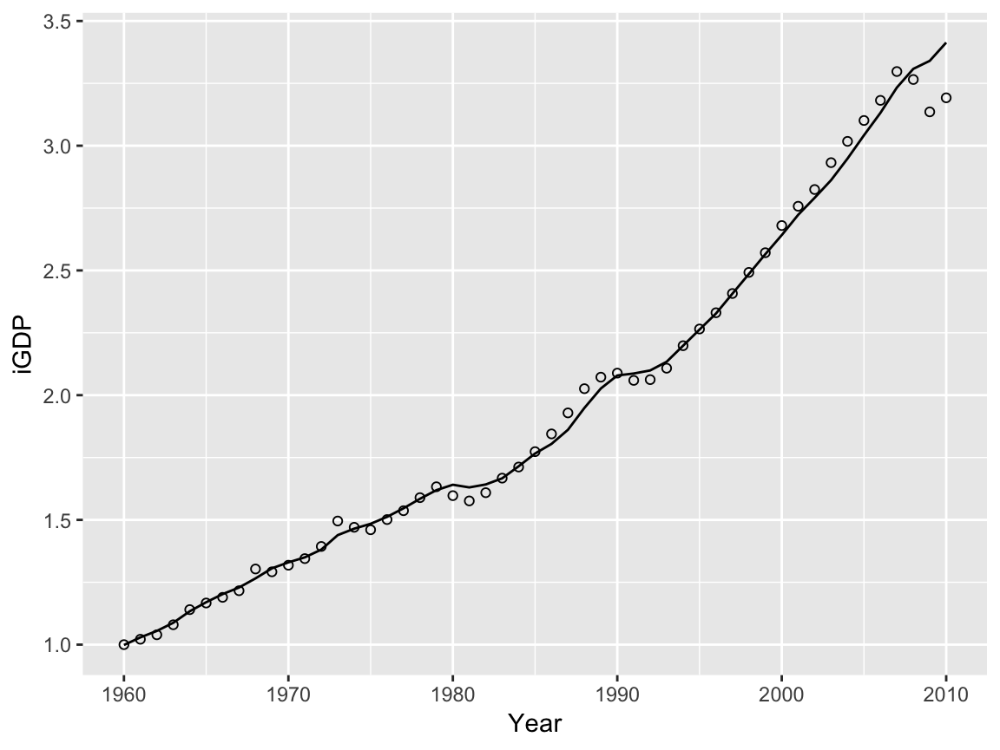
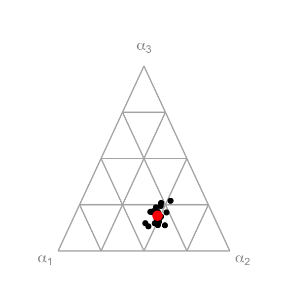

vignettes/MacroGrowth.Rmd
MacroGrowth.RmdThe R package MacroGrowth provides sophisticated tools for fitting macroeconomic growth models to data. MacroGrowth has several desirable features for macroeconomic modelers:
The functions in this package were developed for and used first in Heun et al. (2017).
MacroGrowth supports the following macroeconomic growth models:
In the above equations:
In the CES model, the elasticity of substitution between the (\(x_1\), \(x_2\)) pair and \(x_3\) is given by \(\sigma = \frac{1}{1 + \rho}\). The elasticity of substitution between \(x_1\) and \(x_2\) is given by \(\sigma_1 = \frac{1}{1 + \rho_1}\).
The Linex model is usually presented with \(a_0\) (as above) and \(c_t\) coefficients. \(c_t\) is the ratio of Linex fitted coefficients, given by \(c_t = \frac{a_1}{a_0}\).
The starting point for any fitting process is macroeconomic data. For this vignette, we’ll use a subset of the UK macroeconomic data from Heun et al. (2017). The data frame EconUK is included in the MacroGrowth package.
library(dplyr)
library(ggplot2)
library(magrittr)
library(rlang)
library(tidyr)
library(MacroGrowth)
head(EconUK)
#> Year iYear Country iGDP iK iL iXp iXu
#> 1 1960 0 UK 1.000000 1.000000 1.0000000 1.0000000 1.000000
#> 2 1961 1 UK 1.021542 1.040630 0.9952632 0.9964601 1.047619
#> 3 1962 2 UK 1.039522 1.068350 0.9943625 1.0238378 1.088765
#> 4 1963 3 UK 1.079728 1.102265 1.0002645 1.0594068 1.179210
#> 5 1964 4 UK 1.140344 1.153710 1.0129718 1.0594941 1.222604
#> 6 1965 5 UK 1.166864 1.202672 1.0090420 1.1118025 1.329057The EconUK data frame contains indexed GDP, capital, labor, and two types of energy data (primary exergy and useful exergy). All economic and energy data series are indexed by ratio to an initial year (1960), such that all quantities are 1 in 1960. Time is indexed by difference to the initial year, such that 1960 is year 0. The prefix i indicates an indexed variable. iK is indexed capital stock, iL is indexed labor, iXp is indexed primary exergy, and iXu is indexed useful exergy.
The functions in MacroGrowth can fit indexed or non-indexed data. When data are indexed as shown in the EconUK data frame, the fitted value of the \(\theta\) parameter is expected to be close to 1. When data are not indexed, the \(\theta\) parameter will likely be far from 1, because \(\theta\) assumes the task of unit conversion from factors of production in various functional forms (on the right side of the economic model) to economic output (on the left side of the economic model).
To fit a model to macroeconomic data, use one of the *Model functions in the MacroGrowth pacakge.
To fit a single-factor model, use the sfModel function.
sffit <- sfModel(formula = iGDP ~ iK + iYear, data = EconUK)
sffit
#> Generalized least squares fit by REML
#> Model: log(iGDP) ~ iK + iYear
#> Data: data
#> Log-restricted-likelihood: 90.73298
#>
#> Coefficients:
#> (Intercept) iK iYear
#> -0.07143534 0.10760947 0.01775149
#>
#> Degrees of freedom: 51 total; 48 residual
#> Residual standard error: 0.0318531The sfModel function produces an SFmodel object.
In all *Model functions, a formula of the form y ~ x1 + x2 + x3 + t communicates the roles of the factors of production to the fitting function. The components of the formula are:
~ character,+ and positioned to the right of the ~ character, and+ character, and always positioned as the rightmost item in the formula.For models with fewer than 3 factors of production, some of x1, x2, and x3 can be omitted.
In the above example, formula = iGDP ~ iK + iYear indicates that the model is to be fitted with indexed GDP (iGDP) as the response variable, indexed capital stock (iK) as the only factor of production, and indexed time (iYear) as the time variable.
The coefficients of the fitted model can be recovered with the naturalCoef function.
Similar functions can be used for the other model types. To fit the Cobb-Douglas model to the UK’s capital stock and labor data, use the cdModel function.
cdfit <- cdModel(formula = iGDP ~ iK + iL + iYear, data = EconUK)
cdfit
#> Generalized least squares fit by REML
#> Model: log(iGDP) - log(iL) ~ I(log(iK) - log(iL)) + iYear
#> Data: sdata
#> Log-restricted-likelihood: 110.7822
#>
#> Coefficients:
#> logscale alpha_1 lambda
#> -0.001552367 0.535182020 0.011122525
#>
#> Degrees of freedom: 51 total; 48 residual
#> Residual standard error: 0.02126305The cdModel function produces a CDEmodel object.
In the above example, iGDP ~ iK + iL + iYear indicates that the model is to be fitted with indexed GDP (iGDP) as the response variable, indexed capital stock (iK) and indexed labor (iL) as the factors of production, and indexed year (iYear) as the time variable.
The coefficients of the model can be recovered with the naturalCoef function.
For the CES production function, use the cesModel function with two or three factors of production.
cesfit <- cesModel(formula = iGDP ~ iK + iL + iYear, data = EconUK)
naturalCoef(cesfit)
#> scale logscale lambda delta delta_1 sigma_1 rho_1 sigma
#> 1 0.9789678 -0.02125655 0.0185403 1 0.486507 0.4522604 1.211116 NA
#> rho alpha_1 alpha_2 alpha_3 sigma_12
#> 1 NA 0.486507 0.513493 0 0.4522604The cesModel function produces a cesModel object.
Note that output elasticities (\(\alpha_1\), \(\alpha_2\), and \(\alpha_3\)) are calculated by the naturalCoef function. Equations for the output elasticities are given in Appendix B of Heun et al. (2017).
Also note that the cesModel function repeatedly calls the excellent cesEst function from the micEconCES pacakge. For more details on the cesEst function, see Henningsen and Henningsen (2011). For more details on the fitting algorithm employed by cesModel, see Heun et al. (2017).
For the Linex model, there must be three factors of production. The first factor of production (\(x_1\)) must be capital stock. The second factor of production (\(x_2\)) must be labor. The third factor of production (\(x_3\)) must be an energy variable.
linexfit <- linexModel(formula = iGDP ~ iK + iL + iXp + iYear, data = EconUK)
naturalCoef(linexfit)
#> logscale scale a_0 a_1 c_t
#> 1 -0.06059558 0.9412038 1.121517 2.121094 1.891272The linexModel function produces a LINEXmodel object.
In the Linex model, output elasticities are a function of time. To recover the output elasticities from the Linex model, use the fortify function. \(\alpha\), \(\beta\), and \(\gamma\) are output elasticities for capital, labor, and energy, respectively.
head(fortify(linexfit))
#> Warning: The `printer` argument is soft-deprecated as of rlang 0.3.0.
#> This warning is displayed once per session.
#> iGDP iK iL iXp iYear alpha beta gamma
#> 1 1.000000 1.000000 1.0000000 1.0000000 0 2.243034 0.9995764 -2.242611
#> 2 1.021542 1.040630 0.9952632 0.9964601 1 2.295505 1.0424762 -2.337981
#> 3 1.039522 1.068350 0.9943625 1.0238378 2 2.359728 1.0083441 -2.368072
#> 4 1.079728 1.102265 1.0002645 1.0594068 3 2.423711 0.9710197 -2.394730
#> 5 1.140344 1.153710 1.0129718 1.0594941 4 2.450361 1.0323764 -2.482737
#> 6 1.166864 1.202672 1.0090420 1.1118025 5 2.572463 0.9577238 -2.530187Linex model output elasticities are given by Equation 9 in Warr and Ayres (2012).
By default the original economic data are saved as an attribute of the model object. Data can be recovered with the getData function.
head(getData(cdfit))
#> iGDP iK iL iYear Year Country iXp iXu
#> 1 1.000000 1.000000 1.0000000 0 1960 UK 1.0000000 1.000000
#> 2 1.021542 1.040630 0.9952632 1 1961 UK 0.9964601 1.047619
#> 3 1.039522 1.068350 0.9943625 2 1962 UK 1.0238378 1.088765
#> 4 1.079728 1.102265 1.0002645 3 1963 UK 1.0594068 1.179210
#> 5 1.140344 1.153710 1.0129718 4 1964 UK 1.0594941 1.222604
#> 6 1.166864 1.202672 1.0090420 5 1965 UK 1.1118025 1.329057To not save original economic data with the model object, set the save.data argument of the various *Model functions to FALSE.
The fitted values of the response variable (\(y\)) can be recovered with the yhat function. The yhat function gives values of the response variable on the natural (not logarithmic) scale.
yhat(cdfit)
#> 1 2 3 4 5 6 7
#> 0.9984488 1.0290928 1.0549029 1.0876802 1.1336588 1.1700072 1.2024519
#> 8 9 10 11 12 13 14
#> 1.2290870 1.2655446 1.3059428 1.3297192 1.3499453 1.3809883 1.4389875
#> 15 16 17 18 19 20 21
#> 1.4648710 1.4844027 1.5122725 1.5465547 1.5846036 1.6192823 1.6409475
#> 22 23 24 25 26 27 28
#> 1.6302700 1.6420764 1.6667102 1.7149290 1.7662026 1.8046970 1.8613175
#> 29 30 31 32 33 34 35
#> 1.9488290 2.0268435 2.0790024 2.0868558 2.0991403 2.1339300 2.1981937
#> 36 37 38 39 40 41 42
#> 2.2630577 2.3272956 2.4069151 2.4857405 2.5651582 2.6416620 2.7230636
#> 43 44 45 46 47 48 49
#> 2.7911568 2.8619729 2.9484881 3.0418918 3.1316387 3.2331410 3.3080798
#> 50 51
#> 3.3402799 3.4134805
#> attr(,"label")
#> [1] "Fitted values"Residuals for any model can be recovered by the resid function. The resid function gives residuals in log space (where the model was fitted).
resid(cdfit)
#> 1 2 3 4 5
#> 1.552367e-03 -7.364064e-03 -1.468726e-02 -7.338088e-03 5.879868e-03
#> 6 7 8 9 10
#> -2.690275e-03 -1.074987e-02 -1.061064e-02 2.935897e-02 -1.082290e-02
#> 11 12 13 14 15
#> -8.545444e-03 -3.794619e-03 9.091704e-03 3.853584e-02 3.768783e-03
#> 16 17 18 19 20
#> -1.626822e-02 -7.208782e-03 -6.266423e-03 2.896405e-03 8.344876e-03
#> 21 22 23 24 25
#> -2.697787e-02 -3.377262e-02 -2.027388e-02 4.380420e-04 -1.723093e-03
#> 26 27 28 29 30
#> 4.177940e-03 2.195630e-02 3.567522e-02 3.882697e-02 2.213411e-02
#> 31 32 33 34 35
#> 4.488027e-03 -1.330458e-02 -1.770870e-02 -1.216693e-02 7.354447e-05
#> 36 37 38 39 40
#> 9.662748e-04 1.362070e-03 2.597079e-04 2.578076e-03 2.304746e-03
#> 41 42 43 44 45
#> 1.439887e-02 1.249488e-02 1.183425e-02 2.421845e-02 2.310354e-02
#> 46 47 48 49 50
#> 1.928135e-02 1.587646e-02 1.966125e-02 -1.297848e-02 -6.322077e-02
#> 51
#> -6.706537e-02Most *Model fitting functions have the capability to account for boundaries and constraints. Constrained fitting behavior is controlled by the constrained argument to the *Model functions.
The simplest fitting function (sfModel) provides an option to constrain the fit with \(m = 1\), thereby assuming a Cobb-Douglas-type model where the output elasticity is constrained to the economically-meaningful value. By default, the single-factor model sets constrained = FALSE.
sfModel(formula = iGDP ~ iK + iYear, data = EconUK) %>% naturalCoef()
#> logscale scale lambda m
#> 1 -0.07143534 0.9310565 0.01775149 0.1076095
sfModel(formula = iGDP ~ iK + iYear, data = EconUK, constrained = TRUE) %>% naturalCoef()
#> logscale scale lambda m
#> 1 -0.0646098 0.9374332 -0.002108252 1The cdModel function always assumes constant returns to scale and fits with \(\displaystyle\sum_i \alpha_i = 1\). By default, constrained = TRUE, thereby assuring that \(0 \le \alpha_i \le 1\).
To demonstrate fitting with constraints, we first use the cdModel function to fit the first 10 years (1960–1969) of EconUK and find \(\alpha_2 < 0\).
cdModel(formula = iGDP ~ iK + iL + iXu + iYear,
data = EconUK %>% filter(Year < 1970),
constrained = FALSE) %>%
naturalCoef()
#> lambda logscale scale alpha_1 alpha_2 alpha_3
#> 1 -0.0145628 -0.005969941 0.9940478 0.6786932 -0.08222236 0.4035292If, on the other hand, we use the default setting for the constrained argument, the best fit is found with \(\alpha_2 = 0\) and different values for \alpha_1 and \alpha_3.
Constraints on the CES model are considerably more complicated than constraints on single-factor or Cobb-Douglas models. When constrained = TRUE, the cesModel function restricts fitted parameters to the following economically-meaningful regions:
The default value of constrained for the cesModel function is TRUE.
To demonstrate, we fit the CES model unconstrained with capital (iK) and useful exergy (iXu) as the factors of production for the years 1980–1989 to find that \(\rho_1\) is beyond the economically meaningful boundary.
cesModel(formula = iGDP ~ iK + iXu + iYear,
data = EconUK %>% filter(Year >= 1980 & Year < 1990),
constrained = FALSE) %>%
naturalCoef()
#> scale logscale lambda delta delta_1 sigma_1
#> 1 0.7380489 -0.3037452 0.01345999 1 2.035971e-10 -0.008234096
#> rho_1 sigma rho alpha_1 alpha_2 alpha_3 sigma_12
#> 1 -122.4462 NA NA 2.035971e-10 1 0 -0.008234096If, instead, we use the default value for constrained (TRUE), we obtain fitted parameters that fall within the economically-meaningful region or on the boundary of the economically-meaningful region, even if the quality of the fit is worse.
cesModel(formula = iGDP ~ iK + iXu + iYear,
data = EconUK %>% filter(Year >= 1980 & Year < 1990)) %>%
naturalCoef()
#> scale logscale lambda delta delta_1 sigma_1 rho_1 sigma rho
#> 1 0.6767522 -0.3904502 0.01340815 1 0.5165425 Inf -1 Inf -1
#> alpha_1 alpha_2 alpha_3 sigma_12
#> 1 0.5165425 0.4834575 0 InfThe process for constrained fitting by the cesModel function is described in detail in Heun et al. (2017). In short, the full CES model and 20 boundary models are compared. The model with the smallest sum of squared errors (SSE) is returned by the cesModel function. Models with larger SSE are stored as a list in the model.attempts attribute of the cesModel object returned by the cesModel function. To retrieve the rejected boundary models, use the attr function.
Bootstrapping is a statistical technique for estimating the precision of parameter estimates by exploring the distribution of estimates in many resampled data sets. Each resampled data set is a randomized version of the original sample data to which the desired analysis method can be applied.
The coefficients from the fit to a resampled time series (the “resample coefficients”) will be different from the coefficients obtained from the fit to historical data (the “base coefficients”) and form a “resample distribution”. When these resample coefficients are highly variable, it is an indication that the data do not determine the parameter estimates very precisely. Even when the residuals are small and the model produces fitted values that track the observed data closely, it may still be difficult to estimate some or all of the model parameters precisely. Lack of precision can stem from a number of factors, including a poor model fit, low model sensitivity to one or more parameters, correlation among parameter estimates, variability unexplained by the predictors in the model, etc.
To perform bootstrap resampling in the EconGrowth package, a model object must first be obtained by calling one of the *Model functions. For this example, we’ll use the cdfit object obtained above. The resampledFits function performs the resampling.
The resampledFits function returns a list with two named members: coeffs and models. coeffs is a data frame with n + 1 rows. The first row contains fitted coefficients for the original model and has a method of orig. The remaining rows contain fitted coefficients for the resample fits, each with a different value for the index variable, and each with the method specified in the function call.
cdfits_rs$coeffs
#> # A tibble: 6 x 8
#> lambda logscale scale alpha_1 alpha_2 alpha_3 method index
#> <dbl> <dbl> <dbl> <dbl> <dbl> <dbl> <chr> <int>
#> 1 0.0111 -0.00155 0.998 0.535 0.465 0 orig 1
#> 2 0.0108 -0.00716 0.993 0.552 0.448 0 wild 1
#> 3 0.0113 0.00344 1.00 0.525 0.475 0 wild 2
#> 4 0.0140 -0.00527 0.995 0.450 0.550 0 wild 3
#> 5 0.0101 -0.00167 0.998 0.566 0.434 0 wild 4
#> 6 0.00972 -0.00371 0.996 0.574 0.426 0 wild 5models is a list containing the model object for each resample fit.
# Original fit
cdfits_rs$models[[1]] %>% naturalCoef()
#> lambda logscale scale alpha_1 alpha_2 alpha_3
#> 1 0.01112252 -0.001552367 0.9984488 0.535182 0.464818 0
# First resampled model
cdfits_rs$models[[2]] %>% naturalCoef()
#> lambda logscale scale alpha_1 alpha_2 alpha_3
#> 1 0.0107888 -0.007162315 0.9928633 0.551759 0.448241 0
# Last resampled model
cdfits_rs$models[[6]] %>% naturalCoef()
#> lambda logscale scale alpha_1 alpha_2 alpha_3
#> 1 0.009720238 -0.003712298 0.9962946 0.5744358 0.4255642 0The resampledFits function knows about models fitted with any of the *Model functions.
resampledFits(model = sffit, method = "wild", n = 5)[["coeffs"]]
#> # A tibble: 6 x 6
#> logscale scale lambda m method index
#> <dbl> <dbl> <dbl> <dbl> <chr> <int>
#> 1 -0.0714 0.931 0.0178 0.108 orig 1
#> 2 -0.115 0.891 0.0362 0.196 wild 1
#> 3 -0.134 0.875 0.0368 0.196 wild 2
#> 4 -0.195 0.822 0.0321 0.276 wild 3
#> 5 -0.0993 0.905 0.0378 0.169 wild 4
#> 6 -0.183 0.833 0.0340 0.249 wild 5
resampledFits(model = cesfit, method = "wild", n = 5)[["coeffs"]]
#> # A tibble: 6 x 15
#> scale logscale lambda delta delta_1 sigma_1 rho_1 sigma rho alpha_1
#> <dbl> <dbl> <dbl> <dbl> <dbl> <dbl> <dbl> <dbl> <dbl> <dbl>
#> 1 0.979 -0.0213 0.0185 1 0.487 0.452 1.21 NA NA 0.487
#> 2 0.984 -0.0159 0.0186 1 0.458 0.477 1.10 NA NA 0.458
#> 3 0.970 -0.0300 0.0192 1 0.497 0.410 1.44 NA NA 0.497
#> 4 0.976 -0.0248 0.0194 1 0.493 0.403 1.48 NA NA 0.493
#> 5 0.985 -0.0156 0.0177 1 0.490 0.485 1.06 NA NA 0.490
#> 6 0.961 -0.0398 0.0218 1 0.548 0.275 2.64 NA NA 0.548
#> # ... with 5 more variables: alpha_2 <dbl>, alpha_3 <dbl>, sigma_12 <dbl>,
#> # method <chr>, index <int>
resampledFits(model = linexfit, method = "wild", n = 5)[["coeffs"]]
#> # A tibble: 6 x 7
#> logscale scale a_0 a_1 c_t method index
#> <dbl> <dbl> <dbl> <dbl> <dbl> <chr> <int>
#> 1 -0.0606 0.941 1.12 2.12 1.89 orig 1
#> 2 -0.0706 0.932 1.14 2.17 1.91 wild 1
#> 3 -0.0498 0.951 1.13 2.20 1.94 wild 2
#> 4 -0.0751 0.928 1.07 1.91 1.78 wild 3
#> 5 -0.0492 0.952 1.12 2.12 1.90 wild 4
#> 6 -0.0945 0.910 1.12 2.02 1.80 wild 5Graphs comparing fitted and historical values are often helpful for visualizing model performance. The following code provides an example using the Cobb-Douglas model fitted above.
bind_cols(EconUK, yhat(cdfit) %>% as.data.frame() %>% set_names("yhat")) %>%
ggplot() +
# Add historical data as points
geom_point(mapping = aes(x = Year, y = iGDP), shape = 1) +
# Add the fitted model as a line
geom_line(mapping = aes(x = Year, y = yhat))
For the purposes of displaying resampled results from the three-factor-of-production Cobb-Douglas model, fitted output elasticies (\(\alpha_i\)) can be shown in a ternary plot.
triData <- cdModel(formula = iGDP ~ iK + iL + iXu + iYear, data = EconUK) %>%
resampledFits(method = "wild", n = 100, seed = 123) %>%
extract2("coeffs")
triData %>% filter(method == "wild") %>%
triPlot(mapping = aes(x = alpha_1, y = alpha_2, z = alpha_3),
alpha = 0.3) +
geom_point(data = triData %>% filter(method == "orig"),
mapping = aes(x = alpha_1, y = alpha_2, z = alpha_3),
color = "red", alpha = 1, size = 3, stat = "triangle")
The MacroGrowth package provides functions that streamline both fitting processes (with *Model functions) and bootstrap resampling (with the resampledFits function) for several macroeconomic growth models.
Henningsen, Arne, and Gèraldine Henningsen. 2011. “Econometric Estimation of the Constant Elasticity of Substitution Function in R: Package micEconCES.” 2011/9. Copenhagen: Institute of Food; Resource Economics University of Copenhagen. http://okonomi.foi.dk/workingpapers/WPpdf/WP2011/WP_2011_9_econometric_estimation_CES.pdf.
Heun, Matthew K., João Santos, Paul E. Brockway, Randall J. Pruim, Tiago Domingos, and Marco Sakai. 2017. “From Theory to Econometrics to Energy Policy: Cautionary Tales for Policymaking Using Aggregate Production Functions.” Energies 10 (203):1–44. https://doi.org/10.3390/en10020203.
Warr, Benjamin S, and Robert U Ayres. 2012. “Useful work and information as drivers of economic growth.” Ecological Economics 73 (C):93–102. https://doi.org/10.1016/j.ecolecon.2011.09.006.